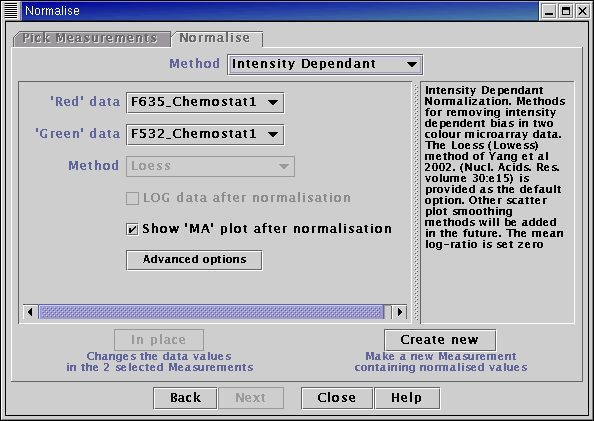
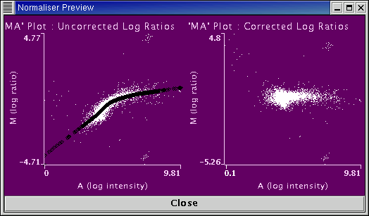

See the Plugin Commands help page for details on the commands offered by this plugin.
Systematic bias in microarray data may be due to many sources. In particular for two colour microarray data (using typically Cy3 and Cy5 fluors) the log ratio values may show a systematic trend that is dependent on the total log intensity. Such systematic trends can detected using "M-A" plots. If for a two colour microarray experiment R and G represent the red and green channel intensities respectively, then M and A are defined as,
M = log(R) - log(G)
A = 0.5 * [log(R) + log(G)]
M is simply the log ratio, i.e. log(R/G), whilst A is the average (over channels) of logged intensities. We would not necessarily expect the log ratio, M, to depend upon the precise value of A. Thus any general trend in a plot of M against A would indicate a systematic intensity dependent bias.
The intensity dependent bias can be removed by first estimating the general trend in the M-A scatter plot and then defining normalised log-ratios as the difference between the raw, un-normalised log ratio and the general trend. The mean normalised log-ratio will be essentially set to zero. If this assumption is not valid you may wish to consider using a different normalisation algorithm.
One of the most popular methods for calculating the general trend in the M-A scatter plot is lowess (Locally Weighted Regression), sometimes also referred to as loess. This calculates the general non-linear trend using a series of short straight line fits to local sections of the data. For more details see Yang et. al. (2002) Nucl. Acid. Res. 30:e15
Notes
When working with a large number of spots the lowess calculation can be time consuming. Therefore rather than performing a locally weighted regression at every value of A in the raw data (i.e. for every spot), we perform a locally weighted regression at every centile of A in the data. For spots with values of A between centiles, the general trend in the scatter plot is defined to be on the straight line segment resulting from the locally weighted regression performed at the nearest centile.
The lowess algorithm currently implemented uses a tri-cube kernel with a span corresponding to 30% of the data. Three iterations of the robust version of the lowess algorithm are performed, with a bi-square kernel on the dependent variable, i.e. M. In future releases it is hoped to make these parameter settings accessible to the user through the "Advanced Options" control panel.
The intensity dependent normalisation methods return normalised log-ratios. All logarithms are natural logarithms, i.e. logarithms to base e.
Select Measurements to normalise from the list on the left-hand side of the panel.

Choose the "red channel" from the list of pre-selected Measurements. Similarly choose the "green channel" data.
Choose the smoothing method. The current default method is "loess".
Choose whether to create new Measurements in the main table, or overwrite the Measurements selected with the normalised data.
If the "Show MA plot after normalisation" option is checked the M-A plots of the raw and normalised data will appear.

The left hand plot shows the un-normalised data, with the black points indicating the lowess smoothed values at each centile. The right hand plot shows the normalised log-ratios.